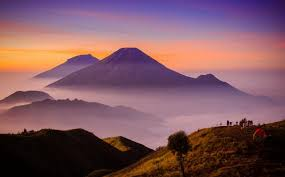

TEMPAT GUNUNG CANTIK
RINJANI
PRAU
SINDORO
MERBABU
BISMO
LAWU
RINJANI

Gunung Rinjani adalah gunung yang berlokasi di Pulau Lombok, Nusa Tenggara Barat.
Gunung yang merupakan gunung berapi kedua tertinggi di Indonesia dengan ketinggian 3.726 mdpl
serta terletak pada lintang 8º25' LS dan 116º28' BT ini merupakan gunung favorit bagi pendaki Indonesia
karena keindahan pemandangannya.
Gunung ini merupakan bagian dari Taman Nasional Gunung Rinjani yang
memiliki luas sekitar 41.330 ha dan diusulkan penambahannya sehingga menjadi 76.000 ha ke
arah barat dan timur
kembali ke atas
PRAU

Gunung yang berada di kawasan Dataran Tinggi Dieng ini diklaim memiliki pesona golden sunrise terbaik.
Bagaimana tidak, matahari yang keluar dari peraduannya disambut dengan bentang alam yang begitu gagah.
Tak heran bila
gunung dengan ketinggian 2.565 mdpl ini adalah lokasi terbaik untuk menyaksikan detik-detik matahari terbit.
kembali ke atas
SINDORO

Gunung Sindoro atau Gunung Sundoro (puncak ketinggian 3.153 mdpl) (bahasa Jawa: ꦒꦸꦤꦸꦁꦱꦸꦤ꧀ꦢꦫ, translit.
Gunung Sundara) merupakan sebuah gunung stratovolcano aktif yang terletak di Jawa Tengah, Indonesia,
dengan Temanggung sebagai kota terdekat. Gunung Sindoro terletak berdampingan dengan Gunung Sumbing.
Gunung sindara dapat terlihat jelas dari puncak sikunir dieng.
kembali ke atas
MERBABU

Gunung Merbabu (Hanacaraka: ꦒꦸꦤꦸꦁꦩꦼꦂꦧꦧꦸ) adalah gunung api yang bertipe Stratovulcano yang terletak secara
geografis pada 7,5° LS dan 110,4° BT. Secara administratif gunung ini berada di wilayah
Kabupaten Magelang di lereng sebelah barat dan Kabupaten Boyolali di lereng sebelah timur dan selatan,
Kabupaten Semarang di lereng sebelah utara, Provinsi Jawa Tengah.
kembali ke atas
BISMO
Gunung Bismo berada di perbatasan Desa Campursari dengan Desa Sikunang, Kecamatan Kejajar, Wonosobo.
Gunung ini ketinggiannya sekitar 2.365 mdpl. Jalur pendakiannya yang terbilang ringan
dan memiliki panorama yang menawan.
kembali ke atas
LAWU
Gunung Lawu (Hanacaraka: ꦒꦸꦤꦸꦁꦭꦮꦸ) adalah sebuah gunung berapi aktif yang terletak di Pulau Jawa,
tepatnya di perbatasan Jawa Tengah dan Jawa Timur, Indonesia. Gunung Lawu memiliki ketinggian sekitar 3.265 mdpl.
Gunung Lawu terletak di antara tiga kabupaten,
yaitu Karanganyar di Jawa Tengah, Ngawi, dan Magetan di Jawa Timur.
kembali ke atas